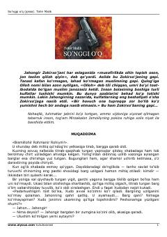

SOAka-uka o'rtasidagi fojiali ziddiyat va vijdon sinovlari haqidagi ta'sirli qissa.
Ushbu qissa aka-uka o'rtasidagi fojiali ziddiyat, oilaviy munosabatlar va insoniy vijdon mavzulariga bag'ishlangan. Asar adib Tohir Malik qalamiga mansub bo'lib, chuqur psixologik tahlillari bilan ajralib turadi.